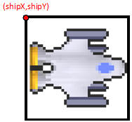
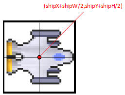
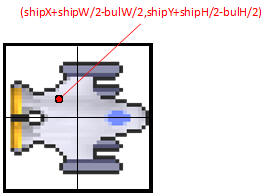

The Bullet Class
Create a new class named
Bullet, which is what the ship will shoot. The bullet class is very similar to the Asteroid class, with
a few differences.
The Bullet class is
represented by the bullet.png image and it does not rotate, so it doesn't need
a rotation variable or the fancy rotation code in the paintSelf method.
The Constructor of the
Bullet class should take in three ints: two ints to represent the x and y where the Bullet
should start and one int to represent the direction. All three of these are needed to make the Bullet start at
the correct place and facing the correct direction.
Add the other methods that are used by Asteroid like update, paintSelf, getX, getY,setX, and setY
Adding Bullets to the Panel:
Similar to Asteroids, you
are going to need an ArrayList<Bullet>. Unlike the
Asteroids, you don't add the Bullets to the list in the Constructor. This code will be in the KeyListener
because we want to wait until the user presses a key before we add the Bullets
to the list.
The list of Bullets will be
processed the same way as the Asteroids are in the paintComponent and
actionPerformed methods.
In the KeyListener, when the
space is pressed ( or whichever key you want to be the trigger ), that is when
you want to add a new Bullet to the list.
You will first need to get the x, y, and direction of the ship ( you
will have to add a "getDirection()" method to the ship class ), then add a new
Bullet to the list using those values.
Bullet b = new Bullet( myShip.getX(), myShip.getY(),
myShip.getDirection());
bulletList.add(b);
Once a bullet is added to the list the panel should start drawing and updating it just like the asteroids.
Fixing the Off Center Bullet Problem:
If you pass the ship's x and y directly into the Bullet's x and y using the code above, you'll notice that it's off center. This is because the x and y represent the upper left hand corner of the ship and bullet.


Adding half the width to the x and half the height to the y will move the point to the center of the ship, but it's still not a perfect fix.


In order to match the center of the Bullet to the center of the ship, we must subtract to accomodate for the width and height of the bullet.


Modify your code so that you modify the x and y you pass into the bullet so that it will be lined up in the center.
Optional: Bullets that disappear after a time
If you want to make the Bullets only go a certain distance then you'll need a few things:
1) Add an instance field int that will serve as a counter for how long the Bullet has been alive. Start it at 0.
2) Add a method public int getCount(), which should return the counter
3) In the update method, increase the counter by one. This will make it so that the counter will represent how many times the Bullet has been updated.
4) In the Panel's actionPerformed method you need to loop through the Bullets in the bulletList and remove any bullets that have a count over a certain number ( start with 50, then tweak it from there). You cannot use a for( Bullet tmp: bulletList) loop, you must use an old fashioned one.
for( int i =0; i < bulletList.size(); i++)
{
//get the bullet at i from the list
Bullet tmp = bulletList.get(i);
//check if that bullet's count is over 50
if( tmp.getCount() < 50 )
{
//if so, remove the bullet using its index
bulletList.remove(i);
}
}